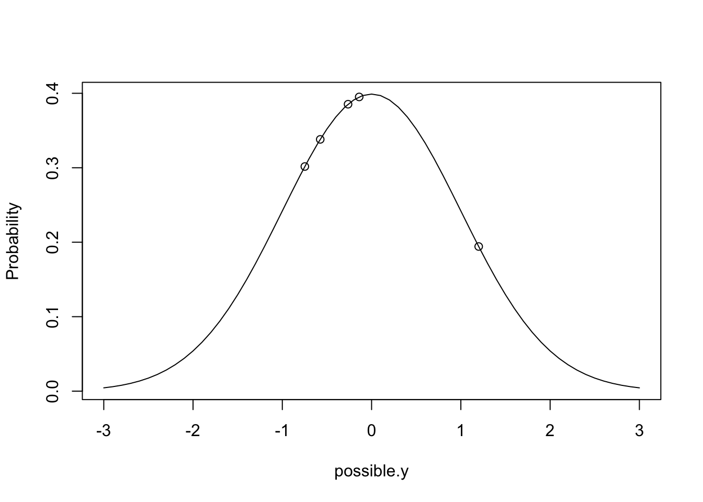

library(MCMCpack)## Loading required package: coda## Loading required package: MASS## ##
## ## Markov Chain Monte Carlo Package (MCMCpack)## ## Copyright (C) 2003-2019 Andrew D. Martin, Kevin M. Quinn, and Jong Hee Park## ##
## ## Support provided by the U.S. National Science Foundation## ## (Grants SES-0350646 and SES-0350613)
## ###Ndata <- data.frame(y = rnorm(5, mean = 0, sd =sqrt(1)))
Ndata <- data.frame(y = c(-0.1388900, 1.1998129, -0.7477224, -0.5752482, -0.2635815))
Ndata$y## [1] -0.1388900 1.1998129 -0.7477224 -0.5752482 -0.2635815possible.y <- seq(-3,3,0.1) #possible values of y
Probability <- dnorm(possible.y, mean=0, sd=sqrt(1)) # density of possible values
plot(Probability~possible.y, type="l")
Probability.y<- dnorm(Ndata$y, mean=0, sd=sqrt(1)) # density of actual values
points(Probability.y~Ndata$y)
prod(dnorm(Ndata$y, mean = 0, sd = sqrt(1))) # The likelihood of these data conditioning on u=0 and s=1 is proportional to product of the densities # same as prod(Probabiility.y)## [1] 0.003015919 prod(Probability.y)## [1] 0.003015919prod(dnorm(Ndata$y, mean = 0.5, sd = sqrt(0.5))) # How probable would data be with mu=0 and var=0.5?## [1] 0.0008624186# Maximum Likelihood Estimator
loglik <- function(par, y) {
sum(dnorm(y, par[1], sqrt(par[2]), log = TRUE))
}
(MLest <- optim(c(mean = 0, var = 1), fn = loglik,
y = Ndata$y, control = list(fnscale = -1,
reltol = 1e-16))$par)## mean var
## -0.1051258 0.4726117#Var est will be downwardly biased
m1a.1 <- glm(y ~ 1, data = Ndata)
summary(m1a.1) # Estimate of Var is Dispersion Parameter. It's same as MLest (but need to multiply by factor of n/(n-1)). Because it's the appropriate penalty for MLest after calculating the var using the observed, estimated mean)##
## Call:
## glm(formula = y ~ 1, data = Ndata)
##
## Deviance Residuals:
## 1 2 3 4 5
## -0.03376 1.30494 -0.64260 -0.47012 -0.15846
##
## Coefficients:
## Estimate Std. Error t value Pr(>|t|)
## (Intercept) -0.1051 0.3437 -0.306 0.775
##
## (Dispersion parameter for gaussian family taken to be 0.5907647)
##
## Null deviance: 2.3631 on 4 degrees of freedom
## Residual deviance: 2.3631 on 4 degrees of freedom
## AIC: 14.442
##
## Number of Fisher Scoring iterations: 2MLest["var"] * (5/4)## var
## 0.5907647# REML
# 1.2 Prior Distribution
logprior <- function(par, priorR, priorB){
dnorm(par[1], mean = priorB$mu, sd = sqrt(priorB$V), log = TRUE)
} #density of the parameter, given a particular
prior <- list(R = list(V = 1, nu = 0.002), B = list(mu = 0, V = 1e+08)) # nu is "degree of belief"
# R is for estimating the variance, B is estimating for the mean
prior## $R
## $R$V
## [1] 1
##
## $R$nu
## [1] 0.002
##
##
## $B
## $B$mu
## [1] 0
##
## $B$V
## [1] 1e+08# 1.3 Posterior Distribution
logprior <- function(par, priorR, priorB) {
dnorm(par[1], mean = priorB$mu, sd = sqrt(priorB$V),
log = TRUE) + log(dinvgamma(par[2], shape = priorR$nu/2,
scale = (priorR$nu * priorR$V)/2))
}
loglikprior <- function(par, y, priorR, priorB) {
loglik(par, y)
logprior(par, priorR, priorB)
}
Best <- optim(c(mean = 0, var = 1), fn = loglikprior,
y = Ndata$y, priorR = prior$R, priorB = prior$B,
method = "L-BFGS-B", lower = c(-1e+05, 1e-05),
upper = c(1e+05, 1e+05), control = list(fnscale = -1,
factr = 1e-16))$par
Best## mean var
## 0.000000000 0.001381684